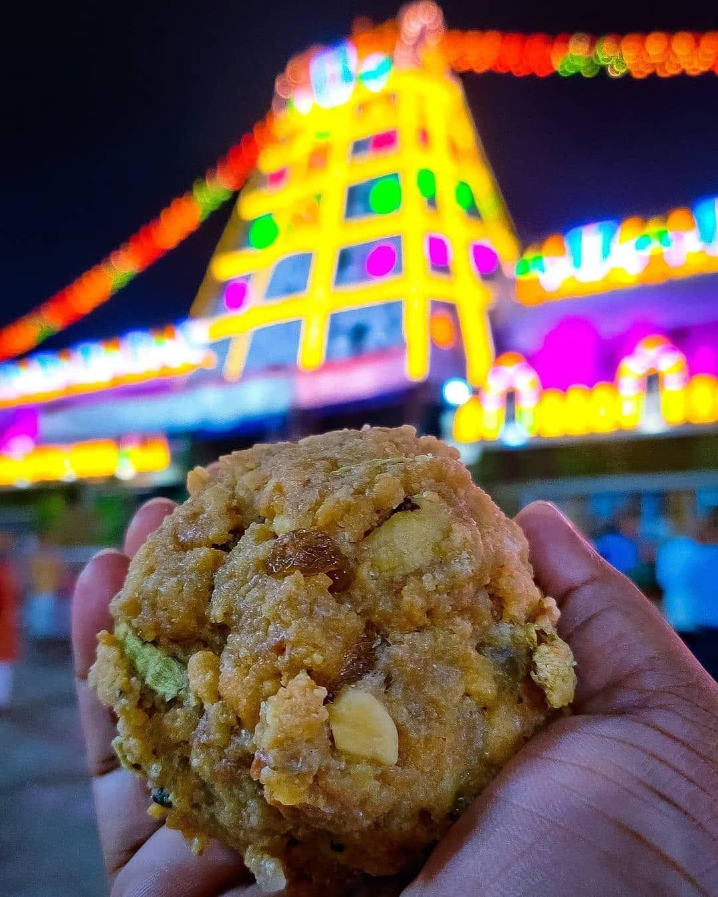

The some of the intresting facts about me are I am very Confident while undergoing any unknown thing and will give my best without any distractions.
I relish Tirupati Laddu for its unique taste that combines the richness of ghee, the sweetness of jaggery, and the aromatic essence of cardamom.

In this Section,I am going to recommend 4 different Sports and Games activities such as Tennis, Swimming, Basketball, Golf.
| Name of Sport | Reason for recommending | Hours per week |
| Tennis | A fast-paced racket sport for singles or doubles, great for agility and coordination. | 6-7 Hours |
| Swimming | A full-body exercise that's easy on the joints, ideal for cardiovascular fitness. | 8-9 Hours |
| Basketball | A team sport that improves endurance, agility, and teamwork skills. | 5-6 Hours |
| Golf | A leisurely sport that combines physical activity with social interaction. | 4-5 Hours |
Click below link to redirect to stackoverflow website
https://stackoverflow.com/questions/2351232/iframe-flashes-white-on-loadCode snippet
style="background:black;"
height="100%" width="100%" scrolling="no">
Click below link to redirect to css-tricks website
https://css-tricks.com/snippets/html/get-rid-of-white-flash-when-iframe-loads/